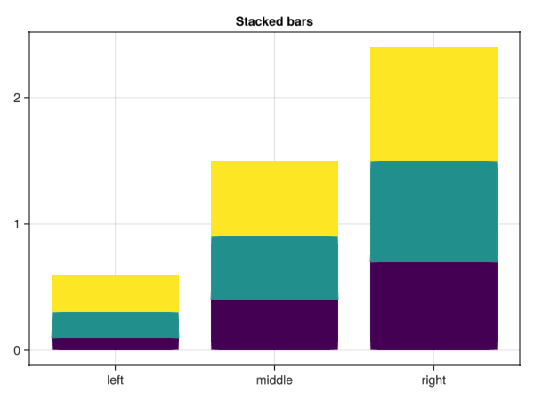
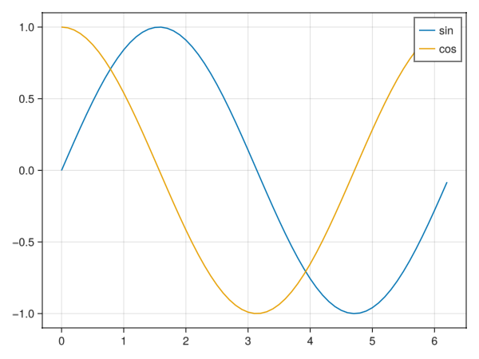

juliaEnvTest3
Documentation for juliaEnvTest3.
juliaEnvTest3.sampleGraph.gm_bar_plotjuliaEnvTest3.sampleGraph.gm_basic_line_plotjuliaEnvTest3.sampleGraph.gm_heatmap_plotjuliaEnvTest3.sampleGraph.gm_histogram_plotjuliaEnvTest3.sampleGraph.gm_multiple_series_plotjuliaEnvTest3.sampleGraph.gm_scatter_plotjuliaEnvTest3.sampleGraph.gm_subplots_plotjuliaEnvTest3.sampleGraph.pl_bar_plotjuliaEnvTest3.sampleGraph.pl_basic_line_plotjuliaEnvTest3.sampleGraph.pl_customized_plotjuliaEnvTest3.sampleGraph.pl_heatmap_plotjuliaEnvTest3.sampleGraph.pl_histogram_plotjuliaEnvTest3.sampleGraph.pl_multiple_series_plotjuliaEnvTest3.sampleGraph.pl_scatter_plotjuliaEnvTest3.sampleGraph.pl_subplots_plotjuliaEnvTest3.sampleMod.addone
juliaEnvTest3.sampleMod.addone — Functionaddone(x, y=1)Compute plus x and y.
If y is unspecified, compute add by 1 using default y value as 1.
Examples
julia> addone(1)
2Arguments
x::Integer: first number to add.y::Integer=1: second number to add.
juliaEnvTest3.sampleGraph.gm_bar_plot — Methodgm_bar_plot()GLMakie bar plot example.

juliaEnvTest3.sampleGraph.gm_basic_line_plot — Methodgm_basic_line_plot()GLMakie basic line plot example.

juliaEnvTest3.sampleGraph.gm_heatmap_plot — Methodgm_heatmap_plot()GLMakie heatmap plot example.

juliaEnvTest3.sampleGraph.gm_histogram_plot — Methodgm_histogram_plot()GLMakie historgram plot example.

juliaEnvTest3.sampleGraph.gm_multiple_series_plot — Methodgm_multiple_series_plot()GLMakie multiple series plot example.

juliaEnvTest3.sampleGraph.gm_scatter_plot — Methodgm_scatter_plot()GLMakie scatter plot example.

juliaEnvTest3.sampleGraph.gm_subplots_plot — Methodgm_subplots_plot()GLMakie subplots plot example.

juliaEnvTest3.sampleGraph.pl_bar_plot — Methodpl_bar_plot()Plots bar plot example.

juliaEnvTest3.sampleGraph.pl_basic_line_plot — Methodpl_basic_line_plot()Plots basic line plot example.

juliaEnvTest3.sampleGraph.pl_customized_plot — Methodpl_customized_plot()Plots customized plot example.

juliaEnvTest3.sampleGraph.pl_heatmap_plot — Methodpl_heatmap_plot()Plots heatmap plot example.

juliaEnvTest3.sampleGraph.pl_histogram_plot — Methodpl_historgram_plot()Plots histogram plot example.

juliaEnvTest3.sampleGraph.pl_multiple_series_plot — Methodpl_multiple_series_plot()Plots multiple series plot example.

juliaEnvTest3.sampleGraph.pl_scatter_plot — Methodpl_scatter_plot()Plots scatter plot example.

juliaEnvTest3.sampleGraph.pl_subplots_plot — Methodpl_subplots_plot()Plots subplots plot example.